20
원생 회복
졸업생만큼 새 원생이 채워졌습니다
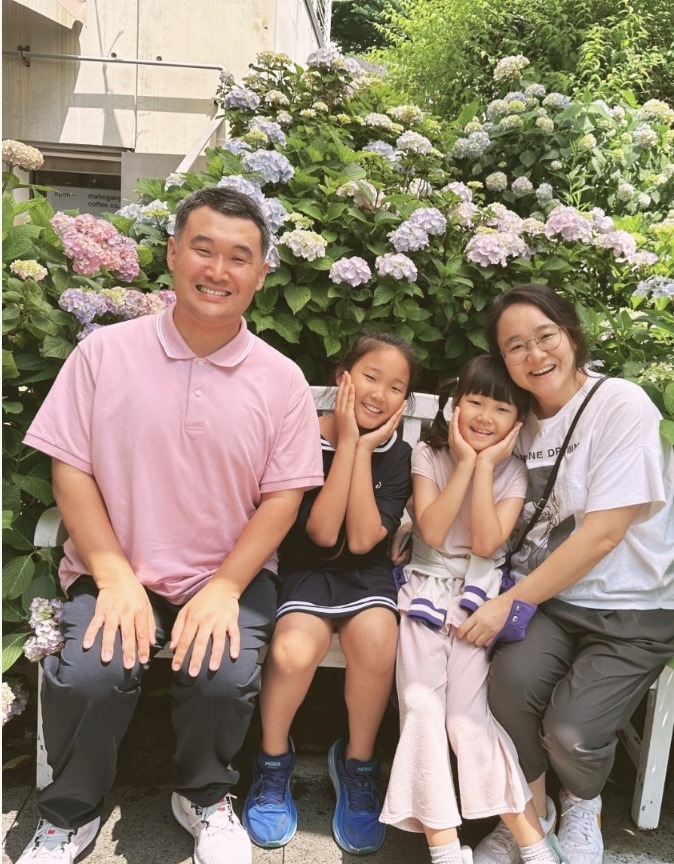
인사말
សួស្ដី 새해 복 많이 받으세요!
캄보디아 프놈펜에서 남기선 & 임소리 선교사 인사드립니다.
한국에서 사역은 날 풀리며 새싹 돋는 봄이 되면 전도하기 좋은 계절이라 바빴고, 단풍 지는 가을이 오면 한 해의 알곡을 거둬들이는 마음과 한 해를 감사하는 추수감사절로 바빴습니다. 온 세상이 얼어붙고 앙상한 가지를 보며 내년을 준비하고 예배로 한 해를 마무리하였습니다.
여름, 한 계절이 일년을 관통하는 캄보디아에서 한여름 크리스마스, 뜨거운 새해, 별 뜨거운 구정을 맞이할 때마다 여전히 생경합니다. 그러나 계절은 다르지만 각자의 문화와 언어로 예수님의 탄생을 기뻐하고 감사하며, 24시간 릴레이 기도로 한 해를 시작하며, 매 달 에스더 기도회로 하나님을 의지하며 예배와 기도에 힘쓰는 것을 보며 성도가 지나는 그리스도의 계절은 같구나 느낍니다.
예수 이름 높이세 능력의 그 이름,
예수 이름 높이세 구원의 그 이름예수 이름을 부르는 자, 예수 이름을 믿는 자,
예수 이름 앞에 나오는 자 복이 있도다
이 꿈에 매여 캄보디아 땅에 서 있습니다. 예수 이름을 믿는 자, 예수 이름을 부르는 자, 예수 이름 앞에 나오는 자, 그러면 됩니다!!
오직 복음만이 캄보디아가 살 길입니다.
한 해의 캄보디아
지난 한 해 외신의 눈으로 캄보디아는 참 시끌시끌했던 나라입니다. ‘음지’의 일이 ‘전계’가 되어 질타와 손가락질 받는 나라가 되었습니다. ‘왜…’라 하나님께 묻기도 했지만 오히려 더 강한 복음의 능력을 위한 기도의 시간이라 여겨졌습니다. 모든 사건 속에서 주님은 일하십니다.
국가 이미지를 위해 정부에서 철저하게 외국인들 주거상황을 체크하며 보이스피싱·스캠을 찾아내고 있으며, 태국과의 분쟁으로 성도들은 모여 나라를 위해 기도하였습니다.
‘나라’의 문제를 하나님께 기도하며 맡기는 성도가 있는 나라,
복받은 나라입니다.
올 1월 쁘레악따메악 교회에서 장학금을 지원받던 4명의 학생이 CKCC 한국어학과에 입학하였습니다. 한국어과를 전공해 능숙한 통역사가 되는 꿈, 급여 높은 한국에서 알바를 해보고 싶다는 수줍은 꿈, 운동을 좋아해 군인이 되고 싶은 꿈. 성도님들의 기도와 후원으로 교회에서 귀한 성도로, 그리고 은혜 가운데 꿈을 갖게 된 청년들입니다.
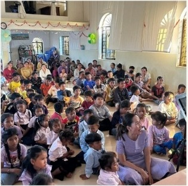
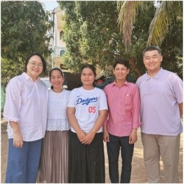
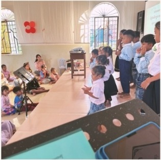
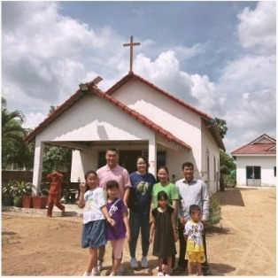
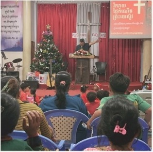
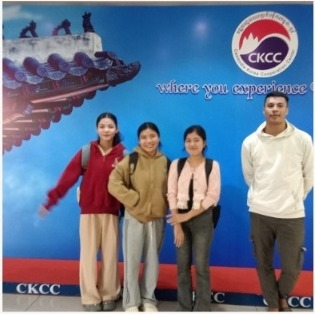
교회학교 · 지역복음화
성인보다 어린아이들이 더 복음을 쉽게 받아들입니다. 그래서 현지 교회의 주 사역은 ‘어린이사역’입니다.
2년간 오는 단기팀 일정을 주 사역지로 ‘아오랄 교회’를 방문했습니다. 기도로 준비한 단기팀들의 사역에 아이들을 초대해 문화사역을 하였습니다. 아이들에게 신나고 즐거운 시간이었으며 현지 사역자들에겐 힘이 되는 시간이었습니다. 아이들과 함께 ‘무엇 하나’ 보러 부모들도 오시곤 했습니다.
이렇게 함께 모인 2년 간의 부모들의 걸음 속에 복음이 들어갔고 아오랄 교회에 성인예배가 세워졌습니다.
주일 40~50명의 성인이 교회에 나와
예배를 드리기 시작했습니다. 할렐루야!
단기팀과 함께 어린이 사역 — 2년의 걸음
4시간 30분 거리 시골교회로 사역 집중. 사역자 자녀 장학금 · 돼지 사료비 지원
26년부터 저희는 4시간 30분 거리의 스누얼 교회에 사역을 집중하려고 합니다. 열악한 환경 속에서도 믿음이 자라고 부흥하고 있는 교회입니다. 시골교회라 재정적으로 어려워 현지 사역자가 돼지를 키우고 있습니다. 현재 사역자의 자녀 장학금 및 돼지 사료비 등을 지원하고 있습니다.
단기팀과 아이들
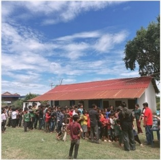
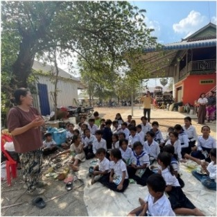
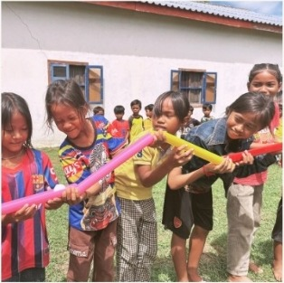
교회가 세워지는 자리
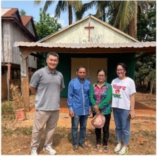
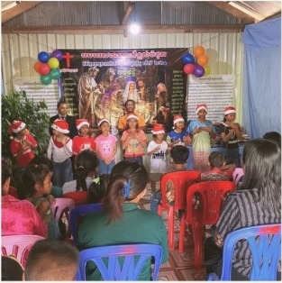
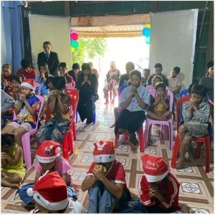
임마누엘 유치원
캄보디아 교육과정과 가치관은 정직보다는 꾀가, 하나님이 아닌 불교에 뿌리를 두었습니다. 저희 유치원은 한국의 유아교육과정에 기독교 가치관을 담은 KOMA 커리큘럼을 가지고 가르치고 있습니다. 또한 연 1회 KOMA 교사 수련회, 분기별 교사 세미나에 참여해 영적 재충전 뿐만 아니라 사명을 새롭게 하는 귀한 시간을 갖고 있습니다.
지난해 졸업 후 줄어든 원생을 놓고 기도부탁하였습니다. 졸업생만큼 채워져 20명의 유아들이 다니게 되었습니다. 또한 이번 2월부터 현지 선생님이 주일 3:30분에 지역 아동을 초대해 복음을 전하는 선데이스쿨을 시작하였습니다. 주일에 이곳이 교회가 됩니다.
20
원생 회복
졸업생만큼 새 원생이 채워졌습니다
3:30
선데이스쿨 시작
주일 오후, 지역 아동 초청 시작
25
기도하는 다음 걸음
원생 25명, 든든한 sunday school
원생이 25명이 되도록, 선데이스쿨에 아이들이 꾸준히 나와 교회가 든든히 세워지도록 기도해 주세요.
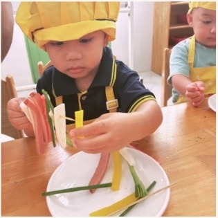
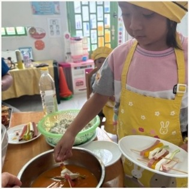
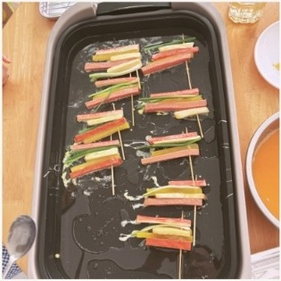
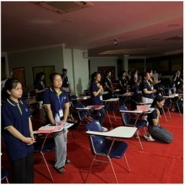
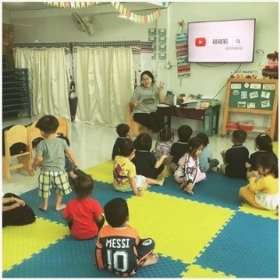
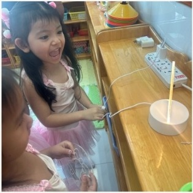
기도제목 I
사역과 제자교회를 위한 기도
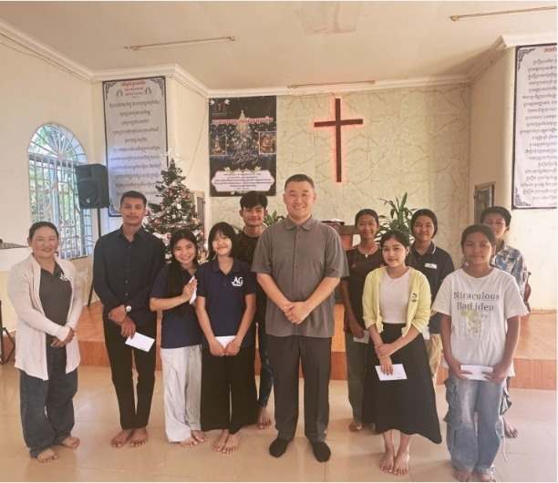
남기선 & 임소리 선교사 성령충만 · 말씀충만, 언어(캄보디아어 · 중국어) 지혜
말씀 위에 굳건한 믿음이 세워지도록
성령충만 & 말씀충만(지역복음화), 가족 건강, 자녀 축복
아이들이 학업을 이수할 수 있도록 후원자가 세워지게 — 아오랄교회 · 스누얼교회
부모님과 함께 오는 아이들을 위한 예배를 새로 세우기 위해
원생 25명이 되고 sunday school이 든든히 세워지도록
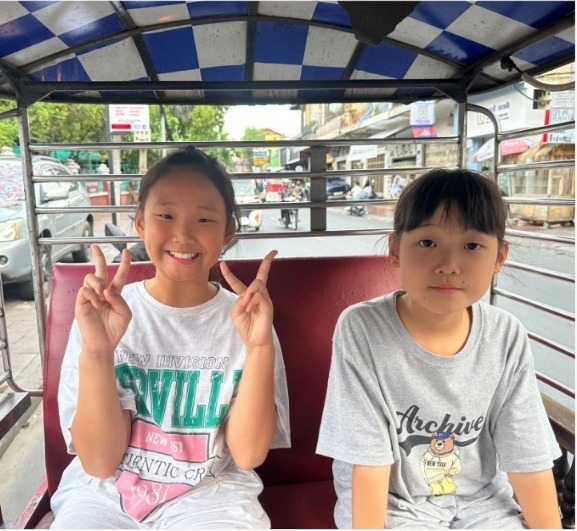
기도제목 II
1
첫째 예랑이가 친구들과 놀다가 다친 발목에 통증이 계속되어 사모의 갑상선 외래 차 한국 방문 때 함께 가 진료를 받았습니다. 양쪽 발목 뼈 모양이 달라 MRI 찍어본 결과, 성장판 골절로 판명되었습니다. 다음 선교대회 차 한국 방문 때까지 경과를 보기로 하고 걷기를 제외한 모든 활동을 조심해야 한다고 결과를 들었습니다.
예랑이의 발목 성장판 골절이 잘 아물 수 있도록 기도해 주세요.
2
3.5톤 트럭이 휴대폰을 보다 전방주시하지 않고 그대로 돌진해 우측이 먹히는 사건이 있었습니다. 그 가운데 은혜임은 그 날 사모가 우측에 타고 있지 않았고 — 무면허 · 무보험 운전자였지만 저희가 가입한 보험이 있어서 차량 수리비용을 일부 감당할 수 있었던 것입니다.
문제는 현지 정비 기술력이 부족하여 하나를 고치면 다른 것이 고장납니다. 차량이 드라이브가 걸리지 않아 정비소에 맡겼는데 원인을 찾지 못해 미션을 갈았고, 그 이후 원인을 알 수 없는 진동이 생겼습니다. 지난 주에 등원하는데 갑자기 차가 꿀렁이는 격한 진동으로 아이들이 공포를 느끼기도 하였습니다. 다시 수리를 맡겨 진동은 살짝 누그러졌으나 소음과 함께 에어컨에서 따뜻한 바람이 나와 다시 수리를 맡겼습니다.
도로 사정과 안전을 위해 장거리 사역지는 택시를 대절해 다니고 있습니다.
차량 구매를 위해 기도해 주세요.
함께 기도해 주세요 ↓
함께하기
한 사람의 기도가 캄보디아 한 영혼에게 가닿습니다.
기도제목 다시 보기[은행명] [계좌번호] 예금주: [예금주]
후원은 부담 없이, 기도가 우선입니다.